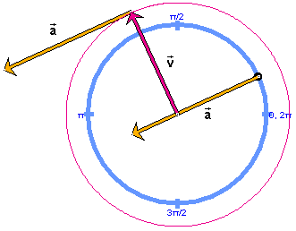

Final Remarks

Note, however, that if the acceleration vector is attached to the center of the circle like the velocity vector, its direction is away from the center rather than towards it. Its direction is still radial. The applet on Page 4 can display the acceleration vector when it is attached to the center of the circle. Select "acceleration at origin" from the Vector Panel.
An unambiguous way of stating what the direction of the acceleration vector is to say that its direction is opposite to that of the position vector.